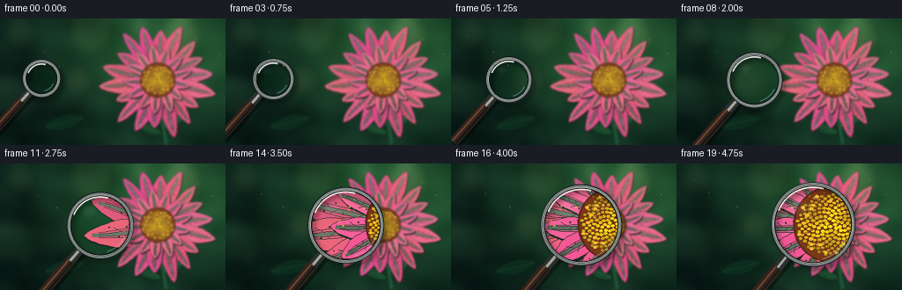
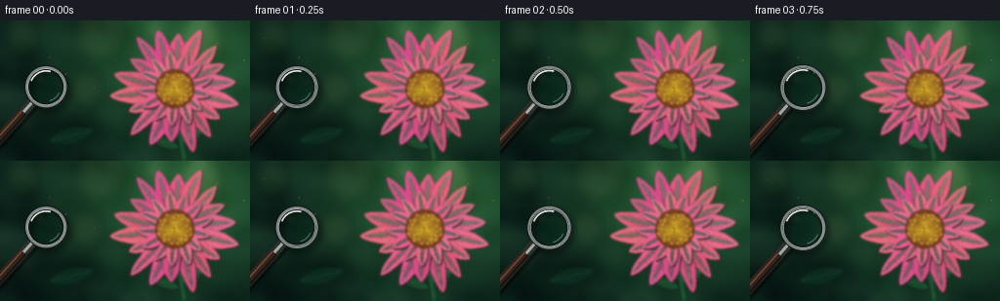

CODING AGENTS AS PIXEL WORLD MODELS
traex/GPT-5.6-Sol · phygen_070
点击播放 · 原生 RGB 像素
逐轮保存的候选
回放视频、检查图与代码变化。
每份候选均可单独播放。实际图片检查记录在下方工具轨迹中。
候选 01播放与检查图
点击播放 · 原生 RGB 像素


展开代码变化
--- 上一保存版本
+++ 本次保存版本
@@ -0,0 +1,287 @@
+from pathlib import Path
+import math
+import numpy as np
+import cv2
+from PIL import Image, ImageDraw, ImageFilter
+import artifact_io
+
+CASE_DIR = Path(__file__).resolve().parent
+W, H, N = 256, 144, 20
+S = 3
+WW, HH = W*S, H*S
+rng = np.random.default_rng(70070)
+
+def sc(v):
+ return int(round(v*S))
+
+def pts_scaled(points):
+ return [(sc(x), sc(y)) for x, y in points]
+
+def smoothstep(x):
+ return x*x*(3.0-2.0*x)
+
+def make_background():
+ yy, xx = np.mgrid[0:HH, 0:WW].astype(np.float32)
+ x = xx / WW
+ y = yy / HH
+ # Layered garden greens, with a warm pool of backlight behind the blossom.
+ light = np.exp(-(((x-.73)/.42)**2 + ((y-.22)/.55)**2))
+ dark = np.exp(-(((x-.06)/.30)**2 + ((y-.82)/.52)**2))
+ fine = (np.sin(xx*.043 + np.sin(yy*.021)*1.5) + np.sin(yy*.061-xx*.012))*0.5
+ a = np.zeros((HH, WW, 3), np.float32)
+ a[...,0] = 14 + 24*light - 6*dark + 2*fine
+ a[...,1] = 38 + 54*light - 13*dark + 4*fine
+ a[...,2] = 29 + 22*light - 8*dark + 3*fine
+ # Smooth random organic texture.
+ noise = rng.normal(0, 1, (HH, WW)).astype(np.float32)
+ noise = cv2.GaussianBlur(noise, (0,0), 10*S)
+ noise /= max(noise.std(), 1e-5)
+ a += noise[...,None] * np.array([2.5,4.5,3.0], np.float32)
+ a = np.uint8(np.clip(a,0,255))
+ im = Image.fromarray(a, 'RGB').convert('RGBA')
+
+ # Defocused foliage and circular bokeh.
+ bokeh = Image.new('RGBA', (WW,HH), (0,0,0,0))
+ d = ImageDraw.Draw(bokeh, 'RGBA')
+ circles = [
+ (22,18,17,(111,157,84,26)), (54,123,31,(5,26,20,72)),
+ (102,15,25,(169,181,111,20)), (131,119,25,(21,72,49,40)),
+ (205,21,23,(232,208,139,30)), (237,76,29,(36,103,69,28)),
+ (14,87,23,(70,130,91,23)), (88,70,17,(205,188,116,18)),
+ (227,132,20,(10,45,34,55)), (159,11,11,(244,223,154,25))]
+ for cx,cy,r,col in circles:
+ d.ellipse((sc(cx-r),sc(cy-r),sc(cx+r),sc(cy+r)), fill=col,
+ outline=(255,245,196,min(22,col[3])), width=sc(.8))
+ bokeh = bokeh.filter(ImageFilter.GaussianBlur(sc(5.5)))
+ im = Image.alpha_composite(im,bokeh)
+
+ # Silhouetted stems and leaves behind the flower.
+ fol = Image.new('RGBA',(WW,HH),(0,0,0,0)); fd=ImageDraw.Draw(fol,'RGBA')
+ fd.line(pts_scaled([(190,151),(184,115),(179,80)]), fill=(30,89,54,210), width=sc(5))
+ fd.line(pts_scaled([(189,144),(212,104)]), fill=(25,70,44,170), width=sc(2))
+ draw_leaf(fd, (198,116), 29, 10, -31, (29,91,53,205))
+ draw_leaf(fd, (169,125), 31, 11, 202, (25,79,47,210))
+ draw_leaf(fd, (73,118), 48, 16, 166, (12,57,38,135))
+ im=Image.alpha_composite(im,fol.filter(ImageFilter.GaussianBlur(sc(.35))))
+ return im
+
+def draw_leaf(draw, center, length, width, angle_deg, color):
+ th=math.radians(angle_deg); u=np.array([math.cos(th),math.sin(th)]); v=np.array([-u[1],u[0]])
+ c=np.array(center,float); arr=[]
+ for side in (1,-1):
+ ts=np.linspace(-.5,.5,18) if side==1 else np.linspace(.5,-.5,18)
+ for t in ts:
+ wid=width*math.sin(math.pi*(t+.5))**.72
+ q=c+u*(t*length)+v*(side*wid*.5)
+ arr.append(tuple(q))
+ draw.polygon(pts_scaled(arr), fill=color)
+ p1=c-u*length*.43; p2=c+u*length*.43
+ draw.line(pts_scaled([p1,p2]), fill=(100,142,80,90), width=max(1,sc(.55)))
+
+def petal_polygon(center, angle, r0, length, width, phase):
+ th=angle; u=np.array([math.cos(th), math.sin(th)]); v=np.array([-u[1],u[0]])
+ c=np.array(center,float); left=[]; right=[]
+ for z in np.linspace(0,1,29):
+ # bulbous, softly notched petal tip
+ profile=(math.sin(math.pi*z)**0.72) * (0.77+0.23*z)
+ ripple=1 + .045*math.sin(z*5*math.pi+phase)
+ half=width*.5*profile*ripple
+ along=r0+length*z - (1.1*math.sin(math.pi*z)**2)
+ bend=math.sin(math.pi*z)*math.sin(phase)*1.7
+ left.append(tuple(c+u*along+v*(half+bend)))
+ right.append(tuple(c+u*along+v*(-half+bend)))
+ return left + right[::-1]
+
+def draw_petal(layer, center, angle, r0, length, width, color, phase, inner=False):
+ poly=petal_polygon(center,angle,r0,length,width,phase)
+ d=ImageDraw.Draw(layer,'RGBA')
+ # Soft separation shadow beneath each petal.
+ shadow=[(x+1.0,y+1.3) for x,y in poly]
+ d.polygon(pts_scaled(shadow), fill=(59,13,35,95))
+ d.polygon(pts_scaled(poly), fill=color, outline=(113,34,67,125))
+ u=np.array([math.cos(angle), math.sin(angle)]); v=np.array([-u[1],u[0]]); c=np.array(center,float)
+ # Translucent central sheen follows the petal curvature.
+ line=[]
+ for z in np.linspace(.06,.91,18):
+ q=c+u*(r0+length*z)+v*(math.sin(math.pi*z)*math.sin(phase)*1.4)
+ line.append(tuple(q))
+ d.line(pts_scaled(line), fill=(255,190,204,90 if not inner else 70), width=sc(2.2), joint='curve')
+ d.line(pts_scaled(line), fill=(255,220,224,92), width=max(1,sc(.45)), joint='curve')
+ # Fine longitudinal veins and forked capillaries.
+ for off in (-.27,-.13,.13,.27):
+ vl=[]
+ for z in np.linspace(.10,.84,14):
+ half=width*.5*(math.sin(math.pi*z)**.72)*off
+ q=c+u*(r0+length*z)+v*(half+math.sin(math.pi*z)*math.sin(phase)*1.45)
+ vl.append(tuple(q))
+ d.line(pts_scaled(vl), fill=(128,45,82,92), width=max(1,sc(.34)))
+ for z,side in ((.32,-1),(.43,1),(.57,-1),(.68,1)):
+ q0=c+u*(r0+length*(z-.08))
+ q1=c+u*(r0+length*z)+v*(side*width*.18*math.sin(math.pi*z))
+ d.line(pts_scaled([q0,q1]), fill=(131,42,77,75), width=max(1,sc(.32)))
+ # A few texture freckles, most visible under magnification.
+ for k in range(5 if not inner else 3):
+ z=.35+.095*k
+ side=(-1 if k%2 else 1)
+ q=c+u*(r0+length*z)+v*(side*width*(.08+.025*k))
+ rr=.45 if not inner else .35
+ d.ellipse((sc(q[0]-rr),sc(q[1]-rr),sc(q[0]+rr),sc(q[1]+rr)),fill=(121,40,74,90))
+
+def make_flower_scene():
+ im=make_background()
+ petals=Image.new('RGBA',(WW,HH),(0,0,0,0))
+ center=(179,70)
+ # Rear tier: wide, elegant petals with natural asymmetry.
+ outer=[]
+ for i in range(18):
+ ang=2*math.pi*i/18 - .11
+ length=54 + 7*math.sin(i*2.17) + rng.uniform(-2,2)
+ width=18 + 3*math.sin(i*1.41+.7)
+ r0=7.5
+ col=(225+int(10*math.sin(i)), 91+int(16*math.sin(i*.8+1)), 133+int(10*math.cos(i)), 255)
+ outer.append((i,ang,length,width,col,float(rng.uniform(0,2*math.pi))))
+ # Draw upper petals first and lower petals last for mild dimensional overlap.
+ outer.sort(key=lambda z: math.sin(z[1]))
+ for i,ang,length,width,col,phase in outer:
+ draw_petal(petals,center,ang,7.5,length,width,col,phase,False)
+ # Inner tier adds depth and curled overlapping forms.
+ inner=[]
+ for i in range(13):
+ ang=2*math.pi*(i+.42)/13
+ inner.append((math.sin(ang),i,ang,32+rng.uniform(-3,3),13+rng.uniform(-1,2),float(rng.uniform(0,6.28))))
+ inner.sort()
+ for _,i,ang,length,width,phase in inner:
+ col=(239,105+int(10*math.sin(i)),145+int(8*math.cos(i)),255)
+ draw_petal(petals,center,ang,6,length,width,col,phase,True)
+ im=Image.alpha_composite(im,petals)
+
+ # Golden disk with hundreds of tiny spiral florets and pollen grains.
+ disk=Image.new('RGBA',(WW,HH),(0,0,0,0)); dd=ImageDraw.Draw(disk,'RGBA')
+ cx,cy=center
+ dd.ellipse((sc(cx-20),sc(cy-20),sc(cx+20),sc(cy+20)),fill=(119,60,29,255),outline=(83,38,24,220),width=sc(1))
+ phi=math.pi*(3-math.sqrt(5))
+ for j in range(190):
+ rad=18.3*math.sqrt((j+.8)/190)
+ ang=j*phi
+ x=cx+rad*math.cos(ang); y=cy+rad*.88*math.sin(ang)
+ rr=1.05-(rad/18.3)*.30
+ base=int(212-67*(rad/18.3)+22*math.sin(j*.91))
+ col=(max(120,base+32),max(71,base),38,255)
+ dd.ellipse((sc(x-rr),sc(y-rr*.72),sc(x+rr),sc(y+rr*.72)),fill=col)
+ if j%4==0:
+ dd.point((sc(x-.25),sc(y-.25)),fill=(255,233,123,240))
+ # Stamens projecting over the disk edge.
+ for j in range(26):
+ ang=2*math.pi*j/26+.14*math.sin(j)
+ r=15.5+2.5*math.sin(j*2.2)
+ x=cx+r*math.cos(ang); y=cy+r*.9*math.sin(ang)
+ dd.line(pts_scaled([(cx+11*math.cos(ang),cy+10*math.sin(ang)),(x,y)]),fill=(120,65,26,180),width=max(1,sc(.35)))
+ dd.ellipse((sc(x-.9),sc(y-.65),sc(x+.9),sc(y+.65)),fill=(245,183,62,255))
+ im=Image.alpha_composite(im,disk)
+
+ # Pinpoint pollen on nearby petals.
+ pollen=Image.new('RGBA',(WW,HH),(0,0,0,0)); pd=ImageDraw.Draw(pollen,'RGBA')
+ for j in range(42):
+ ang=rng.uniform(0,2*math.pi); rad=rng.uniform(21,48)
+ x=cx+rad*math.cos(ang); y=cy+rad*.72*math.sin(ang)
+ r=rng.uniform(.22,.50)
+ pd.ellipse((sc(x-r),sc(y-r),sc(x+r),sc(y+r)),fill=(246,188,83,int(rng.integers(90,190))))
+ im=Image.alpha_composite(im,pollen)
+ return np.array(im.convert('RGB'))
+
+def remap_lens(sharp, cx, cy, radius, mag, biasx, biasy):
+ # Build a subtle barrel-distorted optical enlargement in the lens footprint.
+ x0=max(0,int((cx-radius-4)*S)); x1=min(WW,int((cx+radius+4)*S)+1)
+ y0=max(0,int((cy-radius-4)*S)); y1=min(HH,int((cy+radius+4)*S)+1)
+ ys,xs=np.mgrid[y0:y1,x0:x1].astype(np.float32)
+ cxs,cys=cx*S,cy*S
+ dx=xs-cxs; dy=ys-cys
+ rho=np.sqrt(dx*dx+dy*dy)/(radius*S)
+ barrel=1.0 + .055*np.clip(rho,0,1)**2
+ mapx=(cx+biasx)*S + dx/mag*barrel
+ mapy=(cy+biasy)*S + dy/mag*barrel
+ patch=cv2.remap(sharp,mapx,mapy,interpolation=cv2.INTER_CUBIC,borderMode=cv2.BORDER_REFLECT_101)
+ # Detail and color become increasingly apparent through the glass.
+ blur=cv2.GaussianBlur(patch,(0,0),1.05*S)
+ patch=cv2.addWeighted(patch,1.30,blur,-.30,0)
+ hsv=cv2.cvtColor(patch,cv2.COLOR_RGB2HSV).astype(np.float32)
+ hsv[...,1]*=1.08; hsv[...,2]*=1.035
+ patch=cv2.cvtColor(np.uint8(np.clip(hsv,0,255)),cv2.COLOR_HSV2RGB)
+ alpha=np.clip((radius*S-np.sqrt(dx*dx+dy*dy))/(1.5*S),0,1)[...,None]
+ return (x0,y0,x1,y1,patch,alpha)
+
+def render_frame(sharp, idx):
+ t=idx/(N-1)
+ e=smoothstep(t)
+ # The lens crosses the garden and grows in perspective as it nears the blossom.
+ cx=47 + 108*e
+ cy=68 + 1.7*math.sin(math.pi*t) + 1.2*e
+ radius=22 + 26*e
+ mag=1.12 + 1.15*e
+ # Aim through the glass slightly rightward so the center and left petals fill it at the end.
+ biasx=14.0*e; biasy=.7*e
+
+ # Outside remains gently macro-soft; lens uses the tack-sharp master.
+ soft_sigma=(1.05-.22*e)*S
+ frame=cv2.GaussianBlur(sharp,(0,0),soft_sigma)
+ x0,y0,x1,y1,patch,alpha=remap_lens(sharp,cx,cy,radius,mag,biasx,biasy)
+ base=frame[y0:y1,x0:x1].astype(np.float32)
+ # faint cool glass transmission
+ patchf=patch.astype(np.float32)*np.array([.985,1.015,1.025],np.float32)
+ frame[y0:y1,x0:x1]=np.uint8(np.clip(base*(1-alpha)+patchf*alpha,0,255))
+
+ out=Image.fromarray(frame,'RGB').convert('RGBA')
+ # Lens cast shadow on scene.
+ shadow=Image.new('RGBA',(WW,HH),(0,0,0,0)); sd=ImageDraw.Draw(shadow,'RGBA')
+ sd.ellipse((sc(cx-radius+3.3),sc(cy-radius+4.3),sc(cx+radius+3.3),sc(cy+radius+4.3)),outline=(0,0,0,105),width=sc(5.2))
+ shadow=shadow.filter(ImageFilter.GaussianBlur(sc(2.5)))
+ out=Image.alpha_composite(out,shadow)
+
+ fg=Image.new('RGBA',(WW,HH),(0,0,0,0)); d=ImageDraw.Draw(fg,'RGBA')
+ # Handle sits under the circular rim, toward the viewer at lower left.
+ th=math.radians(132 - 2.5*e); ux,uy=math.cos(th),math.sin(th)
+ neck0=(cx+ux*(radius-1),cy+uy*(radius-1))
+ neck1=(cx+ux*(radius+13+3*e),cy+uy*(radius+13+3*e))
+ end=(cx+ux*(radius+67+7*e),cy+uy*(radius+67+7*e))
+ d.line(pts_scaled([(neck0[0]+2,neck0[1]+3),(end[0]+2,end[1]+3)]),fill=(0,0,0,100),width=sc(11+2*e))
+ d.line(pts_scaled([neck0,neck1]),fill=(44,47,46,255),width=sc(10+1.2*e))
+ d.line(pts_scaled([neck0,neck1]),fill=(181,184,174,230),width=sc(3.1))
+ d.line(pts_scaled([neck1,end]),fill=(52,34,29,255),width=sc(10.5+2.0*e))
+ d.line(pts_scaled([(neck1[0]-1.5,neck1[1]-1.0),(end[0]-1.5,end[1]-1.0)]),fill=(125,79,55,220),width=sc(2.0))
+ d.line(pts_scaled([(neck1[0]+2.8,neck1[1]+1.5),(end[0]+2.8,end[1]+1.5)]),fill=(24,19,18,170),width=sc(2.4))
+
+ # Multi-toned metal rim gives a strongly readable magnifying glass silhouette.
+ box=(sc(cx-radius),sc(cy-radius),sc(cx+radius),sc(cy+radius))
+ d.ellipse(box,outline=(16,20,20,255),width=sc(5.2))
+ d.ellipse((sc(cx-radius+.9),sc(cy-radius+.9),sc(cx+radius-.9),sc(cy+radius-.9)),outline=(126,136,134,255),width=sc(2.3))
+ d.ellipse((sc(cx-radius+3.4),sc(cy-radius+3.4),sc(cx+radius-3.4),sc(cy+radius-3.4)),outline=(222,229,220,210),width=max(1,sc(.75)))
+ # Glass sheen and curved highlights.
+ d.arc((sc(cx-radius+5),sc(cy-radius+5),sc(cx+radius-5),sc(cy+radius-5)),202,286,fill=(255,255,249,230),width=sc(1.7))
+ d.arc((sc(cx-radius+7),sc(cy-radius+7),sc(cx+radius-7),sc(cy+radius-7)),24,75,fill=(153,205,211,130),width=sc(1.1))
+ # Broad faint reflection near upper left.
+ gl=Image.new('RGBA',(WW,HH),(0,0,0,0)); gd=ImageDraw.Draw(gl,'RGBA')
+ gd.ellipse((sc(cx-radius*.58),sc(cy-radius*.63),sc(cx-radius*.08),sc(cy-radius*.22)),fill=(233,255,255,17))
+ gl=gl.filter(ImageFilter.GaussianBlur(sc(3)))
+ out=Image.alpha_composite(out,gl)
+ out=Image.alpha_composite(out,fg)
+
+ # A handful of drifting foreground pollen motes gives life and depth.
+ motes=Image.new('RGBA',(WW,HH),(0,0,0,0)); md=ImageDraw.Draw(motes,'RGBA')
+ for j in range(9):
+ x=(21+j*29+8*math.sin(j*1.9+t*2.1))%270-7
+ y=18+(j*17)%116 + 3*math.sin(t*3+j)
+ rr=.45+(j%3)*.18
+ md.ellipse((sc(x-rr),sc(y-rr),sc(x+rr),sc(y+rr)),fill=(255,218,126,95))
+ out=Image.alpha_composite(out,motes.filter(ImageFilter.GaussianBlur(sc(.25))))
+ # Area resampling creates clean antialiasing at required resolution.
+ arr=np.array(out.convert('RGB'))
+ return cv2.resize(arr,(W,H),interpolation=cv2.INTER_AREA)
+
+def main():
+ sharp=make_flower_scene()
+ frames=np.stack([render_frame(sharp,i) for i in range(N)]).astype(np.uint8)
+ artifact_io.save(frames, CASE_DIR)
+ print('saved',frames.shape,frames.dtype,'range',int(frames.min()),int(frames.max()))
+
+if __name__=='__main__':
+ main()
可观测工具轨迹
实际执行的命令与返回图片。
命令 1exit 0
/bin/bash -lc "cat prompt.txt && printf '\\n--- GENERATION_RULES.md ---\\n' && cat GENERATION_RULES.md"
命令 2exit 0
/bin/bash -lc "cat task_spec.json && printf '\\n--- FILES ---\\n' && find . -maxdepth 2 -type f -printf '%p\\n' | sort"
命令 3exit 0
/bin/bash -lc "command -v ffmpeg || true; command -v blender || true; python3 - <<'PY' mods=['numpy','PIL','cv2','imageio','scipy'] for m in mods: try: x=__import__(m); print(m, getattr(x,'__version__','ok')) except Exception as e: print(m, 'MISSING',e) PY"
命令 4exit 0
/bin/bash -lc "sed -n '1,260p' artifact_io.py"
命令 5exit 0
/bin/bash -lc "find /usr/bin /usr/local/bin -maxdepth 1 -type f \\( -name 'ffmpeg' -o -name 'convert' -o -name 'magick' \\) -print 2>/dev/null | head"
命令 6exit 0
/bin/bash -lc "cat > generate.py <<'PY'
from pathlib import Path
import math
import numpy as np
import cv2
from PIL import Image, ImageDraw, ImageFilter
import artifact_io
CASE_DIR = Path(__file__).resolve().parent
W, H, N = 256, 144, 20
S = 3
WW, HH = W*S, H*S
rng = np.random.default_rng(70070)
def sc(v):
return int(round(v*S))
def pts_scaled(points):
return [(sc(x), sc(y)) for x, y in points]
def smoothstep(x):
return x*x*(3.0-2.0*x)
def make_background():
yy, xx = np.mgrid[0:HH, 0:WW].astype(np.float32)
x = xx / WW
y = yy / HH
# Layered garden greens, with a warm pool of backlight behind the blossom.
light = np.exp(-(((x-.73)/.42)**2 + ((y-.22)/.55)**2))
dark = np.exp(-(((x-.06)/.30)**2 + ((y-.82)/.52)**2))
fine = (np.sin(xx*.043 + np.sin(yy*.021)*1.5) + np.sin(yy*.061-xx*.012))*0.5
a = np.zeros((HH, WW, 3), np.float32)
a[...,0] = 14 + 24*light - 6*dark + 2*fine
a[...,1] = 38 + 54*light - 13*dark + 4*fine
a[...,2] = 29 + 22*light - 8*dark + 3*fine
# Smooth random organic texture.
noise = rng.normal(0, 1, (HH, WW)).astype(np.float32)
noise = cv2.GaussianBlur(noise, (0,0), 10*S)
noise /= max(noise.std(), 1e-5)
a += noise[...,None] * np.array([2.5,4.5,3.0], np.float32)
a = np.uint8(np.clip(a,0,255))
im = Image.fromarray(a, 'RGB').convert('RGBA')
# Defocused foliage and circular bokeh.
bokeh = Image.new('RGBA', (WW,HH), (0,0,0,0))
d = ImageDraw.Draw(bokeh, 'RGBA')
circles = [
(22,18,17,(111,157,84,26)), (54,123,31,(5,26,20,72)),
(102,15,25,(169,181,111,20)), (131,119,25,(21,72,49,40)),
(205,21,23,(232,208,139,30)), (237,76,29,(36,103,69,28)),
(14,87,23,(70,130,91,23)), (88,70,17,(205,188,116,18)),
(227,132,20,(10,45,34,55)), (159,11,11,(244,223,154,25))]
for cx,cy,r,col in circles:
d.ellipse((sc(cx-r),sc(cy-r),sc(cx+r),sc(cy+r)), fill=col,
outline=(255,245,196,min(22,col[3])), width=sc(.8))
bokeh = bokeh.filter(ImageFilter.GaussianBlur(sc(5.5)))
im = Image.alpha_composite(im,bokeh)
# Silhouetted stems and leaves behind the flower.
fol = Image.new('RGBA',(WW,HH),(0,0,0,0)); fd=ImageDraw.Draw(fol,'RGBA')
fd.line(pts_scaled([(190,151),(184,115),(179,80)]), fill=(30,89,54,210), width=sc(5))
fd.line(pts_scaled([(189,144),(212,104)]), fill=(25,70,44,170), width=sc(2))
draw_leaf(fd, (198,116), 29, 10, -31, (29,91,53,205))
draw_leaf(fd, (169,125), 31, 11, 202, (25,79,47,210))
draw_leaf(fd, (73,118), 48, 16, 166, (12,57,38,135))
im=Image.alpha_composite(im,fol.filter(ImageFilter.GaussianBlur(sc(.35))))
return im
def draw_leaf(draw, center, length, width, angle_deg, color):
th=math.radians(angle_deg); u=np.array([math.cos(th),math.sin(th)]); v=np.array([-u[1],u[0]])
c=np.array(center,float); arr=[]
for side in (1,-1):
ts=np.linspace(-.5,.5,18) if side==1 else np.linspace(.5,-.5,18)
for t in ts:
wid=width*math.sin(math.pi*(t+.5))**.72
q=c+u*(t*length)+v*(side*wid*.5)
arr.append(tuple(q))
draw.polygon(pts_scaled(arr), fill=color)
p1=c-u*length*.43; p2=c+u*length*.43
draw.line(pts_scaled([p1,p2]), fill=(100,142,80,90), width=max(1,sc(.55)))
def petal_polygon(center, angle, r0, length, width, phase):
th=angle; u=np.array([math.cos(th), math.sin(th)]); v=np.array([-u[1],u[0]])
c=np.array(center,float); left=[]; right=[]
for z in np.linspace(0,1,29):
# bulbous, softly notched petal tip
profile=(math.sin(math.pi*z)**0.72) * (0.77+0.23*z)
ripple=1 + .045*math.sin(z*5*math.pi+phase)
half=width*.5*profile*ripple
along=r0+length*z - (1.1*math.sin(math.pi*z)**2)
bend=math.sin(math.pi*z)*math.sin(phase)*1.7
left.append(tuple(c+u*along+v*(half+bend)))
right.append(tuple(c+u*along+v*(-half+bend)))
return left + right[::-1]
def draw_petal(layer, center, angle, r0, length, width, color, phase, inner=False):
poly=petal_polygon(center,angle,r0,length,width,phase)
d=ImageDraw.Draw(layer,'RGBA')
# Soft separation shadow beneath each petal.
shadow=[(x+1.0,y+1.3) for x,y in poly]
d.polygon(pts_scaled(shadow), fill=(59,13,35,95))
d.polygon(pts_scaled(poly), fill=color, outline=(113,34,67,125))
u=np.array([math.cos(angle), math.sin(angle)]); v=np.array([-u[1],u[0]]); c=np.array(center,float)
# Translucent central sheen follows the petal curvature.
line=[]
for z in np.linspace(.06,.91,18):
q=c+u*(r0+length*z)+v*(math.sin(math.pi*z)*math.sin(phase)*1.4)
line.append(tuple(q))
d.line(pts_scaled(line), fill=(255,190,204,90 if not inner else 70), width=sc(2.2), joint='curve')
d.line(pts_scaled(line), fill=(255,220,224,92), width=max(1,sc(.45)), joint='curve')
# Fine longitudinal veins and forked capillaries.
for off in (-.27,-.13,.13,.27):
vl=[]
for z in np.linspace(.10,.84,14):
half=width*.5*(math.sin(math.pi*z)**.72)*off
q=c+u*(r0+length*z)+v*(half+math.sin(math.pi*z)*math.sin(phase)*1.45)
vl.append(tuple(q))
d.line(pts_scaled(vl), fill=(128,45,82,92), width=max(1,sc(.34)))
for z,side in ((.32,-1),(.43,1),(.57,-1),(.68,1)):
q0=c+u*(r0+length*(z-.08))
q1=c+u*(r0+length*z)+v*(side*width*.18*math.sin(math.pi*z))
d.line(pts_scaled([q0,q1]), fill=(131,42,77,75), width=max(1,sc(.32)))
# A few texture freckles, most visible under magnification.
for k in range(5 if not inner else 3):
z=.35+.095*k
side=(-1 if k%2 else 1)
q=c+u*(r0+length*z)+v*(side*width*(.08+.025*k))
rr=.45 if not inner else .35
d.ellipse((sc(q[0]-rr),sc(q[1]-rr),sc(q[0]+rr),sc(q[1]+rr)),fill=(121,40,74,90))
def make_flower_scene():
im=make_background()
petals=Image.new('RGBA',(WW,HH),(0,0,0,0))
center=(179,70)
# Rear tier: wide, elegant petals with natural asymmetry.
outer=[]
for i in range(18):
ang=2*math.pi*i/18 - .11
length=54 + 7*math.sin(i*2.17) + rng.uniform(-2,2)
width=18 + 3*math.sin(i*1.41+.7)
r0=7.5
col=(225+int(10*math.sin(i)), 91+int(16*math.sin(i*.8+1)), 133+int(10*math.cos(i)), 255)
outer.append((i,ang,length,width,col,float(rng.uniform(0,2*math.pi))))
# Draw upper petals first and lower petals last for mild dimensional overlap.
outer.sort(key=lambda z: math.sin(z[1]))
for i,ang,length,width,col,phase in outer:
draw_petal(petals,center,ang,7.5,length,width,col,phase,False)
# Inner tier adds depth and curled overlapping forms.
inner=[]
for i in range(13):
ang=2*math.pi*(i+.42)/13
inner.append((math.sin(ang),i,ang,32+rng.uniform(-3,3),13+rng.uniform(-1,2),float(rng.uniform(0,6.28))))
inner.sort()
for _,i,ang,length,width,phase in inner:
col=(239,105+int(10*math.sin(i)),145+int(8*math.cos(i)),255)
draw_petal(petals,center,ang,6,length,width,col,phase,True)
im=Image.alpha_composite(im,petals)
# Golden disk with hundreds of tiny spiral florets and pollen grains.
disk=Image.new('RGBA',(WW,HH),(0,0,0,0)); dd=ImageDraw.Draw(disk,'RGBA')
cx,cy=center
dd.ellipse((sc(cx-20),sc(cy-20),sc(cx+20),sc(cy+20)),fill=(119,60,29,255),outline=(83,38,24,220),width=sc(1))
phi=math.pi*(3-math.sqrt(5))
for j in range(190):
rad=18.3*math.sqrt((j+.8)/190)
ang=j*phi
x=cx+rad*math.cos(ang); y=cy+rad*.88*math.sin(ang)
rr=1.05-(rad/18.3)*.30
base=int(212-67*(rad/18.3)+22*math.sin(j*.91))
col=(max(120,base+32),max(71,base),38,255)
dd.ellipse((sc(x-rr),sc(y-rr*.72),sc(x+rr),sc(y+rr*.72)),fill=col)
if j%4==0:
dd.point((sc(x-.25),sc(y-.25)),fill=(255,233,123,240))
# Stamens projecting over the disk edge.
for j in range(26):
ang=2*math.pi*j/26+.14*math.sin(j)
r=15.5+2.5*math.sin(j*2.2)
x=cx+r*math.cos(ang); y=cy+r*.9*math.sin(ang)
dd.line(pts_scaled([(cx+11*math.cos(ang),cy+10*math.sin(ang)),(x,y)]),fill=(120,65,26,180),width=max(1,sc(.35)))
dd.ellipse((sc(x-.9),sc(y-.65),sc(x+.9),sc(y+.65)),fill=(245,183,62,255))
im=Image.alpha_composite(im,disk)
# Pinpoint pollen on nearby petals.
pollen=Image.new('RGBA',(WW,HH),(0,0,0,0)); pd=ImageDraw.Draw(pollen,'RGBA')
for j in range(42):
ang=rng.uniform(0,2*math.pi); rad=rng.uniform(21,48)
x=cx+rad*math.cos(ang); y=cy+rad*.72*math.sin(ang)
r=rng.uniform(.22,.50)
pd.ellipse((sc(x-r),sc(y-r),sc(x+r),sc(y+r)),fill=(246,188,83,int(rng.integers(90,190))))
im=Image.alpha_composite(im,pollen)
return np.array(im.convert('RGB'))
def remap_lens(sharp, cx, cy, radius, mag, biasx, biasy):
# Build a subtle barrel-distorted optical enlargement in the lens footprint.
x0=max(0,int((cx-radius-4)*S)); x1=min(WW,int((cx+radius+4)*S)+1)
y0=max(0,int((cy-radius-4)*S)); y1=min(HH,int((cy+radius+4)*S)+1)
ys,xs=np.mgrid[y0:y1,x0:x1].astype(np.float32)
cxs,cys=cx*S,cy*S
dx=xs-cxs; dy=ys-cys
rho=np.sqrt(dx*dx+dy*dy)/(radius*S)
barrel=1.0 + .055*np.clip(rho,0,1)**2
mapx=(cx+biasx)*S + dx/mag*barrel
mapy=(cy+biasy)*S + dy/mag*barrel
patch=cv2.remap(sharp,mapx,mapy,interpolation=cv2.INTER_CUBIC,borderMode=cv2.BORDER_REFLECT_101)
# Detail and color become increasingly apparent through the glass.
blur=cv2.GaussianBlur(patch,(0,0),1.05*S)
patch=cv2.addWeighted(patch,1.30,blur,-.30,0)
hsv=cv2.cvtColor(patch,cv2.COLOR_RGB2HSV).astype(np.float32)
hsv[...,1]*=1.08; hsv[...,2]*=1.035
patch=cv2.cvtColor(np.uint8(np.clip(hsv,0,255)),cv2.COLOR_HSV2RGB)
alpha=np.clip((radius*S-np.sqrt(dx*dx+dy*dy))/(1.5*S),0,1)[...,None]
return (x0,y0,x1,y1,patch,alpha)
def render_frame(sharp, idx):
t=idx/(N-1)
e=smoothstep(t)
# The lens crosses the garden and grows in perspective as it nears the blossom.
cx=47 + 108*e
cy=68 + 1.7*math.sin(math.pi*t) + 1.2*e
radius=22 + 26*e
mag=1.12 + 1.15*e
# Aim through the glass slightly rightward so the center and left petals fill it at the end.
biasx=14.0*e; biasy=.7*e
# Outside remains gently macro-soft; lens uses the tack-sharp master.
soft_sigma=(1.05-.22*e)*S
frame=cv2.GaussianBlur(sharp,(0,0),soft_sigma)
x0,y0,x1,y1,patch,alpha=remap_lens(sharp,cx,cy,radius,mag,biasx,biasy)
base=frame[y0:y1,x0:x1].astype(np.float32)
# faint cool glass transmission
patchf=patch.astype(np.float32)*np.array([.985,1.015,1.025],np.float32)
frame[y0:y1,x0:x1]=np.uint8(np.clip(base*(1-alpha)+patchf*alpha,0,255))
out=Image.fromarray(frame,'RGB').convert('RGBA')
# Lens cast shadow on scene.
shadow=Image.new('RGBA',(WW,HH),(0,0,0,0)); sd=ImageDraw.Draw(shadow,'RGBA')
sd.ellipse((sc(cx-radius+3.3),sc(cy-radius+4.3),sc(cx+radius+3.3),sc(cy+radius+4.3)),outline=(0,0,0,105),width=sc(5.2))
shadow=shadow.filter(ImageFilter.GaussianBlur(sc(2.5)))
out=Image.alpha_composite(out,shadow)
fg=Image.new('RGBA',(WW,HH),(0,0,0,0)); d=ImageDraw.Draw(fg,'RGBA')
# Handle sits under the circular rim, toward the viewer at lower left.
th=math.radians(132 - 2.5*e); ux,uy=math.cos(th),math.sin(th)
neck0=(cx+ux*(radius-1),cy+uy*(radius-1))
neck1=(cx+ux*(radius+13+3*e),cy+uy*(radius+13+3*e))
end=(cx+ux*(radius+67+7*e),cy+uy*(radius+67+7*e))
d.line(pts_scaled([(neck0[0]+2,neck0[1]+3),(end[0]+2,end[1]+3)]),fill=(0,0,0,100),width=sc(11+2*e))
d.line(pts_scaled([neck0,neck1]),fill=(44,47,46,255),width=sc(10+1.2*e))
d.line(pts_scaled([neck0,neck1]),fill=(181,184,174,230),width=sc(3.1))
d.line(pts_scaled([neck1,end]),fill=(52,34,29,255),width=sc(10.5+2.0*e))
d.line(pts_scaled([(neck1[0]-1.5,neck1[1]-1.0),(end[0]-1.5,end[1]-1.0)]),fill=(125,79,55,220),width=sc(2.0))
d.line(pts_scaled([(neck1[0]+2.8,neck1[1]+1.5),(end[0]+2.8,end[1]+1.5)]),fill=(24,19,18,170),width=sc(2.4))
# Multi-toned metal rim gives a strongly readable magnifying glass silhouette.
box=(sc(cx-radius),sc(cy-radius),sc(cx+radius),sc(cy+radius))
d.ellipse(box,outline=(16,20,20,255),width=sc(5.2))
d.ellipse((sc(cx-radius+.9),sc(cy-radius+.9),sc(cx+radius-.9),sc(cy+radius-.9)),outline=(126,136,134,255),width=sc(2.3))
d.ellipse((sc(cx-radius+3.4),sc(cy-radius+3.4),sc(cx+radius-3.4),sc(cy+radius-3.4)),outline=(222,229,220,210),width=max(1,sc(.75)))
# Glass sheen and curved highlights.
d.arc((sc(cx-radius+5),sc(cy-radius+5),sc(cx+radius-5),sc(cy+radius-5)),202,286,fill=(255,255,249,230),width=sc(1.7))
d.arc((sc(cx-radius+7),sc(cy-radius+7),sc(cx+radius-7),sc(cy+radius-7)),24,75,fill=(153,205,211,130),width=sc(1.1))
# Broad faint reflection near upper left.
gl=Image.new('RGBA',(WW,HH),(0,0,0,0)); gd=ImageDraw.Draw(gl,'RGBA')
gd.ellipse((sc(cx-radius*.58),sc(cy-radius*.63),sc(cx-radius*.08),sc(cy-radius*.22)),fill=(233,255,255,17))
gl=gl.filter(ImageFilter.GaussianBlur(sc(3)))
out=Image.alpha_composite(out,gl)
out=Image.alpha_composite(out,fg)
# A handful of drifting foreground pollen motes gives life and depth.
motes=Image.new('RGBA',(WW,HH),(0,0,0,0)); md=ImageDraw.Draw(motes,'RGBA')
for j in range(9):
x=(21+j*29+8*math.sin(j*1.9+t*2.1))%270-7
y=18+(j*17)%116 + 3*math.sin(t*3+j)
rr=.45+(j%3)*.18
md.ellipse((sc(x-rr),sc(y-rr),sc(x+rr),sc(y+rr)),fill=(255,218,126,95))
out=Image.alpha_composite(out,motes.filter(ImageFilter.GaussianBlur(sc(.25))))
# Area resampling creates clean antialiasing at required resolution.
arr=np.array(out.convert('RGB'))
return cv2.resize(arr,(W,H),interpolation=cv2.INTER_AREA)
def main():
sharp=make_flower_scene()
frames=np.stack([render_frame(sharp,i) for i in range(N)]).astype(np.uint8)
artifact_io.save(frames, CASE_DIR)
print('saved',frames.shape,frames.dtype,'range',int(frames.min()),int(frames.max()))
if __name__=='__main__':
main()
PY
python3 generate.py"命令 7exit 0
/bin/bash -lc "python3 - <<'PY'
from pathlib import Path
import numpy as np, cv2
from PIL import Image
p=Path('.')
fs=sorted((p/'frames').glob('*.png'))
print('frame_files',len(fs),fs[0].name,fs[-1].name)
a=np.stack([np.array(Image.open(x)) for x in fs])
print('array',a.shape,a.dtype,'range',a.min(),a.max())
print('RGB modes',sorted(set(Image.open(x).mode for x in fs)))
print('frame mean rgb first/last',a[0].mean((0,1)).round(2),a[-1].mean((0,1)).round(2))
d=np.mean(np.abs(np.diff(a.astype(np.int16),axis=0)),axis=(1,2,3))
print('adjacent MAD',np.round(d,3),'min/max',round(float(d.min()),3),round(float(d.max()),3))
# Laplacian detail in expected lens disks, compare start/end normalized by area.
for i,(cx,cy,r) in [(0,(47,68,22)),(10,(101,70,35)),(19,(155,69,48))]:
g=cv2.cvtColor(a[i],cv2.COLOR_RGB2GRAY); y,x=np.ogrid[:144,:256]; mask=(x-cx)**2+(y-cy)**2<(r-5)**2
lap=cv2.Laplacian(g,cv2.CV_32F)
print('f',i,'lens_lap_abs',round(float(np.mean(np.abs(lap[mask]))),3),'lens_std',round(float(g[mask].std()),3))
z=np.load('pixels.npz')['pixels']
print('packed tensor',z.shape,z.dtype,'nonzero',bool(np.any(z)))
print('artifacts',[(x.name,x.stat().st_size) for x in [p/'pixels.npz',p/'index.html',p/'inspection.png',p/'transition_check.png']])
PY"命令 8exit 0
/bin/bash -lc 'python3 -m py_compile generate.py artifact_io.py && git status --short 2>/dev/null || true'
保存候选 1 份；完成命令 8 次；可验证图片返回 0 张。原始 API 响应与完整日志保留在本地。